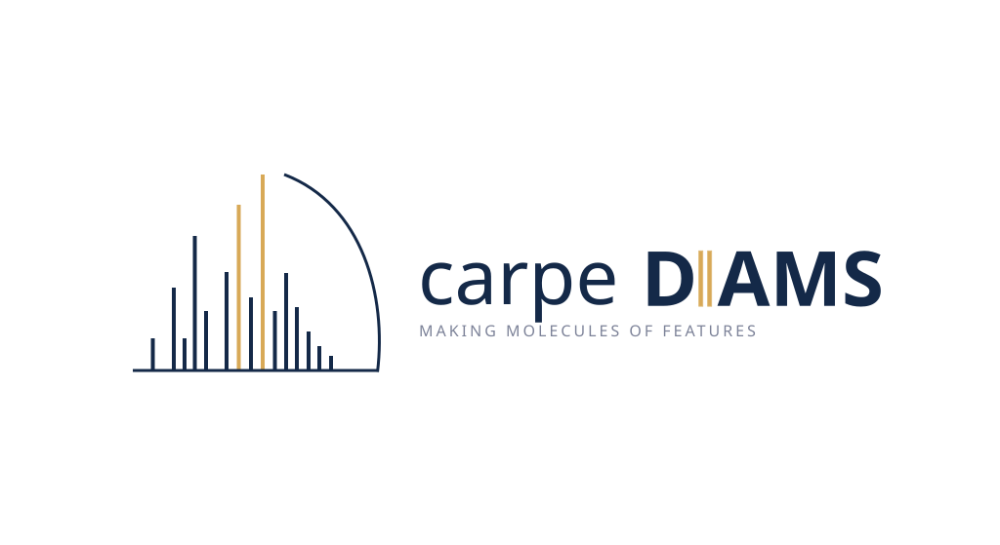

Running the xcms workflow interactively
Source:vignettes/xcms-interactive.Rmd
xcms-interactive.RmdThis vignette walks through the production carpeDIAMS workflow (the
gwf module in modules/carpediams/workflow.py) step by step
in a single interactive R session. The cluster workflow runs four stages
as separate jobs:
[prepare] --> [sample 1..N] --> [filter batch 1..B] --> [finalize] --> MGFHere the same four stages are plain R calls, and the two fan-out
stages are ordinary for loops. Every call goes through
carpediams(), so the code you test interactively is the
code the cluster runs; only the loop driver differs.
If you just want an MGF from a small dataset,
carpediams(input, output) does all of this in one call
(stage = "all"). Use the step-by-step version when the
dataset is large, when you want to look at the intermediates, or when
you are tuning the grouping/filtering settings.
0. Setup: settings in one place
library(carpeDIAMS)
xcms_path <- "path/to/grouped_xcms.rds"
out_dir <- "results/carpediams/"
tmp_dir <- file.path(out_dir, "tmp")
mgf_path <- file.path(out_dir, "parquets", "all_features.mgf")
# Per-feature spectrum building
grouper <- pelt_grouper(p0 = 15, Isat = 1e5)
filter_fn <- correlation_filtering(cor_thresh = 0.5, fdr_thresh = 0.01)
n_batches <- 20LWhy do it this way: the grouper and filter are
closures, so you configure them once and pass the same objects to every
stage. The filter and finalize stages then
can’t end up with different settings, which would be easy to cause when
copying arguments between calls. Setting tmp_dir explicitly
also matters: if you leave it out, carpediams() creates a
tempfile() and deletes it when the call
returns, so the next stage would find nothing. With an explicit
directory, the intermediates survive between calls and you can inspect
them, resume from them, or hand them to a cluster job.
1. Load the xcms object
xobj <- readRDS(xcms_path)
xobj
nrow(xcms::featureDefinitions(xobj)) # must be > 0 (groupChromPeaks() done)
length(xcms::fileNames(xobj))Why do it this way: carpediams() also
accepts the .rds path, but loading the object yourself
first lets you check it before any work starts: that features exist, the
sample count is what you expect, and the file paths still resolve on
this machine. Deserializing a large XcmsExperiment is slow,
and it happens only once here. Later stages take the in-memory object,
which only tells carpediams() to use the xcms route. They
read everything else from tmp_dir and never reload the
object.
2. Prepare: subsample, rank, write the manifest
carpediams(
input = xobj,
output = mgf_path,
tmp_dir = tmp_dir,
stage = "prepare",
subsample = TRUE, # apricot picks representative samples
subset_size = 100L,
q_prob = 0.90,
top_n = 10L # top-N most intense samples per feature
)
list.files(tmp_dir)
#> [1] "fd.rds" "manifest.csv" "mssubset.rds" "sample_topfeatures.rds"
manifest <- read.csv(file.path(tmp_dir, "manifest.csv"))
nrow(manifest)Why do it this way: everything that needs the whole
cohort happens here, once: building the feature × sample intensity
matrix, the apricot subsampling, and ranking which samples are the top-N
for each feature. Each sample then gets a small precomputed list of the
features it contributes to, so the per-sample step never rescans the
full matrix. manifest.csv is the only thing the next loop
needs, and it is a plain CSV, so you can check it in R just as gwf
would.
3. Sample stage: one sample at a time
for (sid in manifest$sample_idx) {
done <- file.exists(file.path(tmp_dir, sprintf(
c("sample_%d_pool.parquet", "sample_%d_pointers.parquet"), sid)))
if (all(done)) next # resume: skip finished samples
carpediams(
input = xobj,
output = mgf_path,
tmp_dir = tmp_dir,
stage = "sample",
sample_idx = sid,
ppm = 20,
rt_buffer = 5
)
}Why do it this way: each iteration reads one mzML, pulls out the MS1 and MS2 scans around that sample’s qualifying features, and writes them to two parquet files. It then returns, so memory goes back down to one sample’s worth. The iterations are fully independent:
- A crash in sample 137 leaves samples 1–136 on disk. Rerun the loop
and the
file.exists()check skips straight to where it stopped. - Each iteration is exactly one gwf
batch_XXXXtarget. To parallelize, swap theforforfurrr::future_walk()(orparallel::mclapply()) without touching the body. - Pass the same
ppm/rt_bufferto every sample. They shape what gets written, and mixed values give inconsistent pools.
Sanity check before moving on:
expected <- c(sprintf("sample_%d_pool.parquet", manifest$sample_idx),
sprintf("sample_%d_pointers.parquet", manifest$sample_idx))
setdiff(expected, list.files(tmp_dir)) # character(0) = all present4. Filter stage: features in batches
for (b in seq_len(n_batches)) {
batch_file <- file.path(tmp_dir, sprintf("features_batch_%d.parquet", b))
if (file.exists(batch_file)) next # resume: skip finished batches
carpediams(
input = xobj,
output = mgf_path,
tmp_dir = tmp_dir,
stage = "filter",
batch_idx = b,
n_batches = n_batches,
grouper = grouper,
filter_fn = filter_fn
)
}Why do it this way: this is the heavy step. For
every feature it combines the pooled fragments from all of its top-N
samples, groups fragment m/z values with grouper,
correlates each group’s elution profile against MS1, and keeps the
groups that pass filter_fn. Splitting the features into
n_batches contiguous chunks gives you:
Bounded memory. Only one batch of features is in memory at a time. On the cluster each batch is a separate 256 GB job; interactively, raise
n_batchesuntil a batch fits on your machine.-
Cheap parameter tuning. Run a single batch (
b <- 1) with a candidategrouper/filter_fn, look at the result, and only then run the rest:res <- arrow::read_parquet(file.path(tmp_dir, "features_batch_1.parquet")) length(unique(res$feature_id)) Isolated failures. Each batch writes its own
features_batch_<b>.parquet, so a failed batch is rerun on its own.
The sample parquets from step 3 are inputs only, so you can redo the
filter stage with new settings as often as you like without rerunning
the per-sample extraction. Delete the old batch files
first
(unlink(Sys.glob(file.path(tmp_dir, "features_batch_*.parquet")))).
Otherwise the resume check skips them, and finalize
combines every features_batch_* file it finds, including
leftovers from a run with a different n_batches.
5. Finalize: combine batches and write the MGF
carpediams(
input = xobj,
output = mgf_path,
tmp_dir = tmp_dir,
stage = "finalize",
grouper = grouper,
filter_fn = filter_fn,
ion_mode = "POSITIVE"
)
#> ✔ Done: N features -> results/carpediams/parquets/all_features.mgfWhy do it this way: once the batches exist,
finalize does no spectral work. It finds every
features_batch_*.parquet, row-binds them, and writes one
MGF block per feature, so it is fast and cheap to rerun (e.g. to switch
ion_mode). Features that ended up without a usable spectrum
still get a block, with a DeconvERROR title. Nothing is
silently dropped, and the MGF can be reconciled 1:1 against
featureDefinitions(xobj). grouper /
filter_fn are passed only so that, if no batch files were
found, the fallback recomputes everything with the same settings and not
the package defaults.
The MGF is the handoff to the annotation module
(annotate --input all_features.mgf ...), the same as the
last gwf target.
Cleanup
tmp_dir is yours to manage in split-stage mode. Keep it
while you iterate on filter settings; delete it once the MGF is
validated:
unlink(tmp_dir, recursive = TRUE)